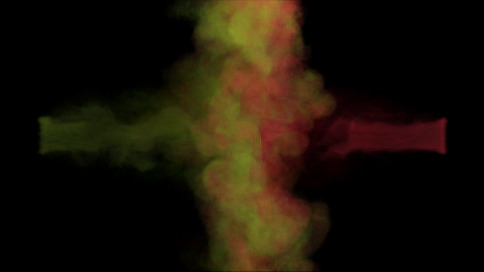
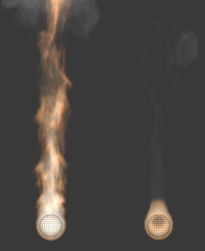
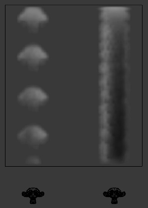

Об'єкт Потоку Диму -- Smoke Flow Object¶
Орієнтир -- Reference
| Panel: | |
|---|---|
| Type: | Flow |
Об'єкти потоку диму -- Smoke Flow використовуються для додання або вилучення диму і вогню в/із об'єкт домену диму -- Smoke Domain.
Для визначення будь-якого сітьового об'єкта як об'єкта потоку диму Smoke Flow додайте для нього фізику диму, клацнувши кнопку Smoke у вкладці . Далі увімкніть кнопку Flow як Smoke Type. Тепер ви повинні мати стандартний об'єкт джерела потоку диму. Ви можете протестувати це, запустивши відтворення анімації за допомогою Alt-A з першого кадру. Якщо об'єкт джерела знаходиться всередині домену, то ви повинні побачити дим.
Опції¶
Опції потоку диму.
Тип Потоку -- Flow Type¶
- Вогонь -- Fire
- Емітує тільки вогонь. Зауважте, що домен буде автоматично також створювати деякий дим для імітації диму, що залишається після згорання палива.
- Дим -- Smoke
- Емітує тільки дим.
- Вогонь + Дим -- Fire + Smoke
- Емітує і вогонь, і дим.
- Вилив -- Outflow
- Вилучає дим і вогонь. Зауважте, що форма виливу буде використовувати габаритну коробку -- bounding box об'єкта.
Джерело Потоку -- Flow Source¶
- Джерело -- Source
Ця устава визначає метод, що використовується для емітування диму і вогню.
- Сіть -- Mesh
Створює дим/вогонь безпосередньо з сіті об'єкта. При обраній цій опції доступні дві додаткових устави, «Поверхня» -- Surface та «Об'єм» -- Volume.
- Поверхня -- Surface
- Максимальна відстань у вокселях від поверхні сіті, на якій створюється дим (дивіться voxel). Оскільки ця устава використовує вокселі для визначення відстані, то результати будуть варіюватися залежно від роздільності домену.
- Об'єм -- Volume
- Величина для емітування диму всередині сіті емітера, де 0 -- імітування вимкнене, а 1 -- імітування увімкнене з усього об'єму. Зауважте, що емітування диму на основі об'єму може давати непередбачувані результати, якщо сіть є не-розгортною -- non-manifold.
- Система Частинок -- Particle System
Створює дим/вогонь із системи частинок на об'єкті потоку. Зауважте, що дим може давати система частинок тільки типу Emitter. Дивіться про створення системи частинок тут -- Particles.
При обранні цієї опції з'являється поле, що дозволяє вибрати систему частинок, а також додаткова опція Set Size.
- Задати Розмір -- Set Size
При увімкненні цієї опції вона дозволяє за допомогою устави Size визначити максимальну відстань у вокселях, у межах якої частинки можуть емітувати дим, подібно до устави *Surface* для сітьових джерел.
При вимкненні, частинки будуть заповняти димом найближчий воксель -- voxel.
- Початкова Скорість -- Initial Velocity
При увімкненні, дим буде успадковувати імпульс джерела потоку.
- Джерело -- Source
- Множник для успадкованої скорості. Значення 1 буде емітувати дим, що рухається з такою ж швидкістю, як і джерело.
- Нормаль -- Normal
- При використанні сіті як джерела ця опція керує тим, наскільки скорість диму задається уздовж нормалі -- normal джерела.
Початкові Значення -- Initial Values¶
- Абсолютна Щільність -- Absolute Density
- Максимальна щільність диму, що дозволена у межах діапазону джерела.
- Щільність -- Density
- Величина диму, що емітується за раз.
- Різниця Температур -- Temperature Difference
- Різниця між температурою емітованого диму та температурою оточення домену. Ця устава впливає на дим залежно від різниці температур Temperature Difference домену.
- Колір Диму -- Smoke Color
Колір емітованого диму. Коли дими різних кольорів змішуються, то вони зливаються та результатний дим забарвлюється у новий комбінований колір.
- Норма Полум'я -- Flame Rate
Величина «палива», спалюваного за секунду. Більші значення дають більше полум'я, менші значення дають менше полум'я:
Приклад, що показує два джерела вогню. Об'єкт зліва має Flame Rate як 5, тоді як об'єкт справа -- Flame Rate як 0.3.
- Відбір: Підкадри -- Sampling: Subframes
Number of subframes used to reduce gaps in emission of smoke from fast-moving sources.
Example showing two fast-moving sources. The object on the left uses 0 subframes, while the one on the right uses 6.
Потік Диму Просунуто -- Smoke Flow Advanced¶
Орієнтир -- Reference
| Type: | Flow |
|---|---|
| Panel: |
При використанні сіті як джерела потоку -- Flow Source ви можете вживати ці устави для керування місцем, звідки може емітуватися дим. Ці устави не мають жодного впливу на об'єкти виливу.
- Вжити Текстуру -- Use Texture
- При увімкненні, для визначення місця, звідки емітується дим, використовується задана текстура.
- Група Вершин -- Vertex Group
- При заданні, для визначення місця, звідки емітується дим, використовується задана група вершин -- Vertex Group.
{kind=link}